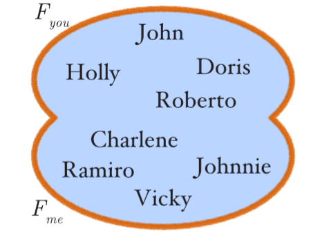
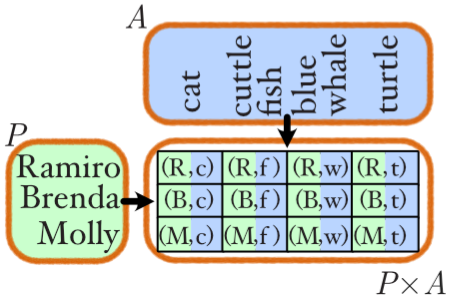

Like sculpting, theoretical modeling requires its own set of dedicated tools. The theoretical modeler’s tools are mathematical concepts, formal expressions, and notational conventions. One can already get quite far with the basics in set theory, functions and logic. Below we present a brief primer. Readers who have taken introductory classes on these topics can skip this section without loss of continuity.
Set theory
A set is a collection of distinct objects. For example, a set of people , animals or numbers N={1,5,7,12}. Sets are usually denoted by a capital letter and their elements listed between curly brackets. They can also be visualized as circles.
Sets can contain an infinite number of objects, e.g. all positive odd numbers .
Set membership
When we want to write that an object is (or is not) part of a set , we use set membership notation:
Subset and superset
Often, we want to express things like ‘the set of mammals is part of the set of all animals ’. We then use subset notation: or . The latter means that is smaller than .
Vice versa, we can express that ‘the set of all things on earth contains all animals ’ using superset notation: or . The latter means that is bigger than .
Intersection, union and difference
Let’s look at what more we can do with two sets. For example, take the set of your friends and my friends.
Who are our common friends? We use set intersection:
Who do we know together? We use set union:

Who do I know that you do not know? We use set difference:
Set builder
A more advanced way to denote sets, is to define a set using set builder notation. This allows us to define (build) a new set given other set(s). A set builder consists of two parts, a variable and a logical predicate:
Let’s look at an example and build a set of all mammals from $A$. We explain logical predicates below, for now lets use verbal language:
You can read this as ‘ contains all ’s with the property that and is a mammal’.
Cardinal product
Set builder notation is useful to filter objects from a single set, but becomes very potent when building from multiple sets. For example:

Read this as ‘ contains all pairs of and with the property that is a person and is an animal’. Pairs are denoted in brackets. You can think of containing all possible combinations of person-animal pairs. For example, these are all the options you have when trying to guess what the favorite animals are of your friends.
Many other set builders are possible too, but this specific ‘pair builder’ is called the cardinal product of two sets. It is used often enough that it has its own special symbol: .
Special sets
Finally, there are some special sets which we often use that have their own symbols:
- Empty set
- Natural (whole) numbers (with zero)
- Natural (whole) numbers (without zero)
- Integer numbers
- Real numbers
Functions
Building on set theory, we can define functions. Functions are relations that map all objects from one set (the domain) to exactly one object from another set (the codomain). We define functions with the following notation, here is the name of the function:
Let’s make this more concrete:
You can read this as ‘ is a function that maps persons to an integer’.
We sometimes omit the exact specification of the function when it is clear what it would be. For example, here it could be a list of numbers representing how much you (dis)like the person, based on your social interactions with that person.
Advanced functions
We can also give functions more complex domains by using set theory. What would a function that captures how much two persons like each other look like?
The cardinal product denotes all pairs of persons and maps pairs to an integer.
Sum and product
We can now define summation and product. These functions iterate over members in a set and return a summary value.
Summation takes all ’s from , applies to each and adds all values:
Product takes $\prod$ all $x$’s from , applies to each and multiplies all values:
Logic
Logical predicates can be thought of as a special type of function that returns a Boolean value true ( or ) or false ( or ). Predicates can be thought of as asking or claiming whether or not a statement is true or false.
For example, is bigger than ? Is a mammal and small? Is Emily your friend? Or, is bigger than , is a mammal and small, and Emily is my friend.
Let’s introduce some formal notation to express these statements:
- number comparisons are familiar to most , , , , , and
- conjunctions (logical ) is if and only if both and
- disjunctions (logical ) is if or if
- set membership can also be used as a predicate is if is a member of set
Universal quantifier (for all)
Sometimes we want to say something about all objects in a set. We can use quantifier predicates to do this. For example, are all animals in the set mammals? We use the universal quantifier:
You can read this as `does it hold for all objects in that is a mammal?’ We implicitly introduced a function with if is a mammal or otherwise.
Existential quantifier (exists)
Another type of question we can ask is, for example, is there someone I know that I like? We use the existential quantifier:
Which we can read as `does there exist a person in the set of my friends for which I like them ?’